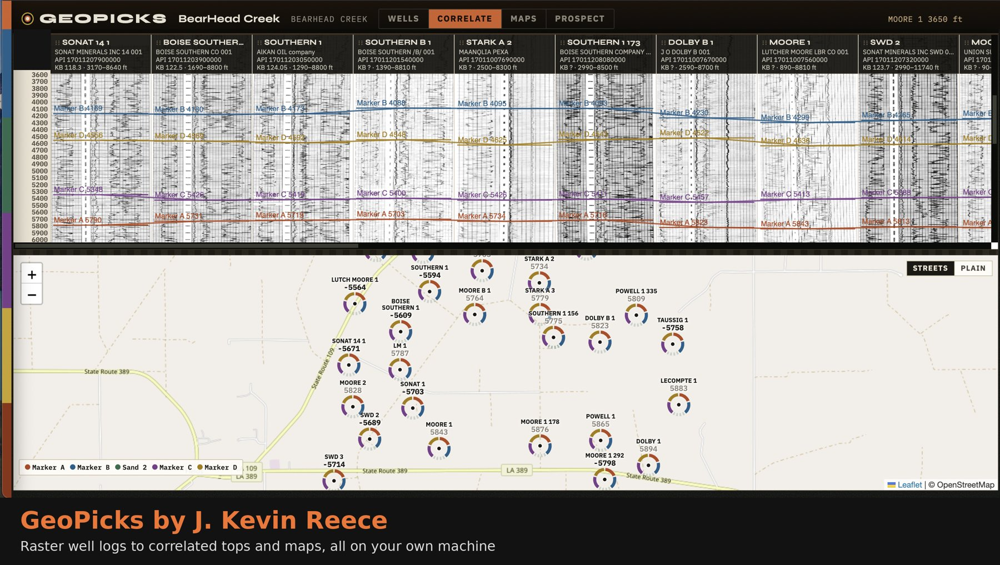

GeoPicks is a native Mac and Windows app for subsurface mapping. Pick tops on scanned well logs, correlate across sections, tie your wells to 2D and 3D seismic, and build structure and isopach maps from both well control and seismic horizons. Affordable for independents and consultants, with no LAS files required and no cloud upload.
Get free beta access
Pick directly on scanned PDF well logs. There's no digitizing and no LAS files needed before you can map.
Hang wells on a datum, pick tops across cross sections, and catch bad picks with QC checks.
Load 2D lines and 3D SEG-Y volumes. View inlines, crosslines, time slices, and arbitrary lines through your wells.
See your well tops posted on the seismic at their two-way times. Enter a checkshot, or build a synthetic seismogram from sonic and density logs and use it as the well's time-depth.
Pick and auto-track horizons on 2D and 3D seismic. They're depth-converted and used alongside your well picks as structure-map control.
GeoPicks computes structure and isopach contours from your picks and labels them as automated, so you treat them as a starting point and check them against your own interpretation.
ZMap grids, shapefiles, a PowerPoint deck, and a PDF prospect pack.
A native app on your own Mac or Windows PC. Your data never leaves your machine. The Bear Head Creek demo field, 27 wells with tops already picked, opens on first launch so you can try it right away.
Since finishing my PhD at Tulane, I've wanted to prospect independently, but traditional subsurface mapping software costs thousands of dollars a year in licensing. So I built GeoPicks for geologists, independents, and consultants who map from well logs and seismic. It reads data from SONRIS, the Texas RRC, IHS/Enverus, Petra and Kingdom exports. It also loads 2D and 3D SEG-Y, ties your wells to the seismic, and lets you pick horizons that feed your structure maps.
J. Kevin Reece, PhD
Beta testers get six months free in exchange for honest feedback. It runs on Mac and Windows.
Download GeoPicks for your computer:
The beta isn't code-signed yet, which is why you'll see those warnings. Full install notes are on the download page.
GeoPicks needs a license key to run. I sign each key myself, so your free 6-month beta key will come by email from me within 1 business day.
Questions or feedback: geopicks.software@gmail.com